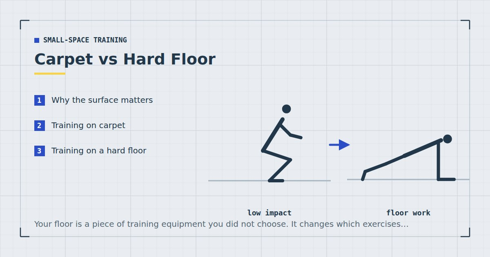

Small-Space Training
Carpet vs Hard Floor: How Your Surface Changes Your Workout
Your floor is a piece of training equipment you did not choose. It changes which exercises are safe, how stable your single-leg work is, and how much your neighbour hears.

Nobody chooses a floor for training, and yet it changes several things that matter: how stable you are, how much force reaches your joints, how much noise reaches your neighbours, and which exercises are practical at all.
Neither surface is better overall. They fail in opposite directions, and knowing which failure you have makes it easy to fix.
Why the surface matters
Three mechanisms.
Compliance. A soft surface deforms under load. That absorbs impact, which is good for joints and noise, and it removes stability, which is bad for anything requiring balance.
Friction. Grip determines whether your hands and feet stay where you put them. Too little and push-ups slide; too much and pivoting movements bind at the knee.
Transmission. How much force passes into the structure and out into the room below. This is the neighbour question, and it is mostly about density rather than softness — see exercise mats for noise reduction.
Training on carpet
What is better. Impact absorption, so floor exercises are comfortable without a mat and knees tolerate kneeling positions well. Noise transmission is meaningfully lower, particularly with underlay. And grip for hands and feet is generally good.
What is worse. Stability, which matters more than people expect. A Bulgarian split squat on thick carpet is noticeably harder to balance in, and the balance rather than the leg becomes the limiting factor — which defeats the point of the exercise, as explained in Bulgarian split squats at home.
Deep pile also causes rotational binding: your foot grips while your knee wants to pivot, which is uncomfortable in lunges and skater steps. And carpet is warmer, so you overheat faster.
The hidden one: carpet hides how uneven your floor is. On a hard floor you notice a slope; on carpet you do not, and it quietly skews your single-leg work.
Training on a hard floor
What is better. Stability, which makes single-leg work genuinely train the leg rather than the balance. Predictable friction. Easy to keep clean. And it is honest about being level.
What is worse. Comfort, particularly for kneeling, and this matters more than it sounds. If glute bridges and dead bugs are uncomfortable, they get quietly dropped from sessions — and floor-based core and glute work is exactly what most home routines are already short of.
Noise transmission is considerably higher, which matters in a flat. Grip varies: laminate in socks is genuinely unsafe for split squats, while barefoot on wood is usually fine.
Socks on laminate, vinyl or polished wood. Feet slide without warning during lunges, split squats and push-ups, and the failure is sudden. Train barefoot or in shoes on hard floors — never in socks.
Side by side
| Factor | Carpet | Hard floor |
|---|---|---|
| Comfort on knees and back | Good | Poor without a mat |
| Stability for single-leg work | Poor | Good |
| Noise transmission | Lower | Higher |
| Grip barefoot | Good | Usually good |
| Grip in socks | Adequate | Dangerous |
| Rotational movements | Binds | Good |
| Sliding exercises | Impossible | Excellent |
| Heat | Warmer | Cooler |
Fixing the problems with each
If you have carpet
Put something firm under single-leg work. A thin plywood offcut or a firm mat under your standing foot restores the stability carpet removes. This one change makes split squats substantially more useful.
Wear shoes for lunges and lateral work. A shoe sole reduces the rotational binding between foot and pile.
Check your floor is level with a spirit level or a phone app once, since carpet hides slopes.
Open a window. You will overheat sooner, which matters for anything continuous.
If you have a hard floor
Get a mat, and cover your hands too. The single highest-return purchase for hard-floor training. Cover roughly two metres by one, not just where your feet go — the measurements are in how much floor space you need.
Never train in socks. Barefoot or shoes.
Train near a supporting wall if noise is a concern. Floors deflect most at the centre of a span, so this costs nothing and helps measurably — more in quiet home workouts.
Use furniture sliders, which only work on hard floors and unlock a genuinely useful category of exercise — see furniture sliders for core and leg training.
Exercises affected most
Bulgarian split squats and single-leg work. Substantially harder to balance on carpet. Firm surface under the standing foot fixes it.
Plank and push-up variations. Uncomfortable on hard floors under the forearms and heels of the hands. A mat fixes it entirely.
Slider exercises. Only possible on hard floors. On carpet, use furniture sliders designed for carpet, which have a hard plastic underside rather than felt.
Lateral skater steps. Bind on deep carpet, slide on polished wood in socks. Shoes solve both.
Kneeling exercises. Genuinely painful on hard floors and fine on carpet. If you are avoiding kneeling variations, the floor may be why rather than your knees.
None of this changes the training itself. Weekly volume3 and proximity to failure1 drive adaptation regardless of what you are standing on, and adult activity guidance says nothing about flooring.2 The surface determines which exercises are practical and comfortable, and comfort determines which ones you actually keep doing.
Other surfaces you might be training on
Carpet and hard floor cover most homes, but three other surfaces come up often enough to be worth a note.
Laminate over concrete. Common in ground-floor flats and new builds. Behaves like a hard floor for comfort and grip, but transmits far less to anyone below because there is no suspended structure to vibrate. If you have this, the noise question largely disappears and only the comfort problem remains — which a mat solves.
Suspended timber with a rug. The most common flat arrangement and the most deceptive. A rug makes the surface feel absorbent underfoot while doing very little about structure-borne transmission, because a thin rug has neither the mass nor the density to dissipate impact energy. If you have been training on a rug and assuming your neighbours are fine, they may well not be.
Tile. Cold, extremely hard, and usually slippery when damp. The worst surface for floor work and the best for stability. Treat it as a hard floor with the comfort problem doubled, and do not train on it in socks under any circumstances.
Training outside
Worth mentioning because it sidesteps most of this. Grass is compliant and forgiving but uneven, which makes single-leg work unreliable. A paved patio behaves like a hard floor with better grip and no neighbour below at all, which makes it the best available surface for anything noisy — and for anyone whose main constraint is a downstairs neighbour, moving one session a week outside is a genuinely useful option, as covered in balcony and garden workouts.
Where to go next
For choosing a mat, see exercise mats for noise reduction. For the full set of small-space constraints, see the guide to working out in a small apartment.
Frequently asked questions
Is it better to work out on carpet or a hard floor?
Neither is better overall — they fail in opposite directions. Carpet is more comfortable and quieter but less stable for single-leg work. A hard floor is stable and honest about being level but uncomfortable without a mat and noisier for neighbours.
Can you do Bulgarian split squats on carpet?
Yes, but the balance rather than the leg often becomes the limiting factor, which defeats the point. Putting something firm — a plywood offcut or a dense mat — under your standing foot restores the stability carpet removes.
Is it safe to work out in socks?
Not on laminate, vinyl or polished wood. Feet slide without warning during lunges, split squats and push-ups, and the failure is sudden. Train barefoot or in shoes on hard floors.
Does carpet reduce workout noise for neighbours?
Meaningfully, particularly with underlay. Carpet absorbs impact at the point of contact and reduces transmission into the structure below, though it does not make genuine jumping acceptable in a flat.
Do I need a mat if I have carpet?
Usually not for comfort — carpet with underlay already provides more cushioning than most fitness mats. A firm surface under one foot for single-leg work is more useful than a soft mat.
Why do my knees hurt kneeling on a hard floor?
Because the kneecap and surrounding tissue are being compressed against an unyielding surface. This is a flooring problem rather than a knee problem, and a mat solves it entirely. If you have been avoiding kneeling exercises, the floor may be the reason.
Sources and further reading
- Schoenfeld BJ, Grgic J, Ogborn D, Krieger JW. “Strength and Hypertrophy Adaptations Between Low- vs. High-Load Resistance Training: A Systematic Review and Meta-analysis.” Journal of Strength and Conditioning Research, 2017;31(12):3508–3523. PubMed.
- World Health Organization. WHO Guidelines on Physical Activity and Sedentary Behaviour. 2020.
- Schoenfeld BJ, Ogborn D, Krieger JW. “Dose-response relationship between weekly resistance training volume and increases in muscle mass: A systematic review and meta-analysis.” Journal of Sports Sciences, 2017;35(11):1073–1082. PubMed.
- NHS. Physical activity guidelines for adults aged 19 to 64.
Comments
Comments are not enabled yet. Add a hosted comment embed (Disqus, Commento, Giscus) inside this container when you are ready.